Hokkaido adalah pulau terbesar kedua di Jepang, terletak di bagian paling Utara di Jepang. Populasinya diperkirakan mencapai 5.507.456 penduduk/Jiwa. Kota besar di Hokkaido bernama Sapporo. Hokakaido termasuk kota yang ramai. Di dekatnya ada juga kota Otaru yang merupakan salah satu tujuan wisata populer di Jepang.
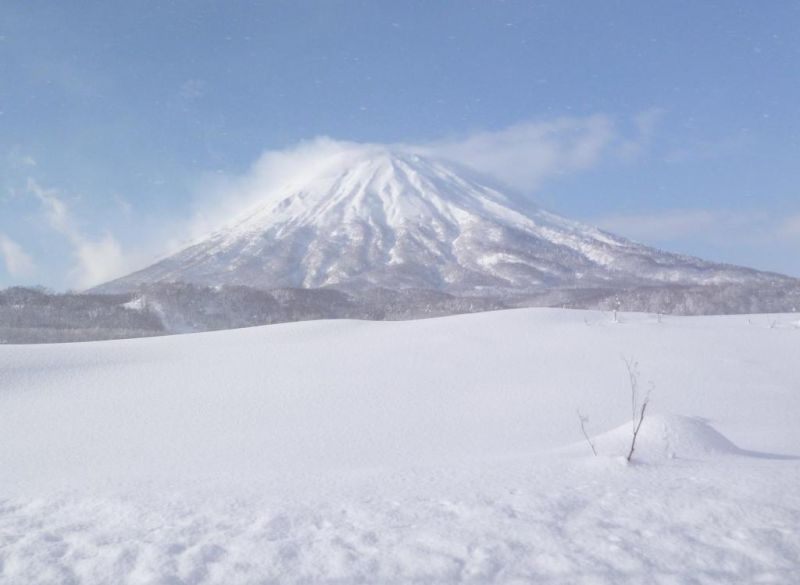
Dipisahkan oleh Selat Tsugaru dari Honshu, Hokkaido juga merupakan rumah bagi kereta api bawah laut terbesar di dunia, Terowongan Seikan (青函隧道, baca: Seikan Zuidou). Terowongan Seikan merupakan satu-satunya penghubung antara Hokkaido dan pulau utama Jepang, Honshu, dengan melalui jalur darat. Terowongan Kereta Seikan adalah salah satu dari sedikit cara untuk mencapai Hokkaido, yang lainnya bisa melalui jalur laut dengan kapal feri atau jalur udara dengan pesawat.
Hokkaido belum terhubung oleh jaringan kereta api Shinkansen, namun kereta 'Sleeper' dari Tokyo adalah pilihan yang banyak digunakan. Ada jaringan kereta api Perusahaan Kereta Api Hokkaido, tapi banyak dari kota-kota di Hokkaido hanya dapat diakses melalui jalan darat.
Jika ingin menggunakan mobil, kapal Feri adalah satu-satunya pilihan, dari pelabuhan Sendai, Niigata, Oarai, Tomakomai, Maizuru (Prefektur Kyoto) dan Tsuruga (Prefektur Fukui). Jika dengan pesawat, orang Jepang sering menggunakan jalur Tokyo-Sapporo (New Chitose Airport), dikenal sebagai salah satu dari 10 rute udara tersibuk di dunia.
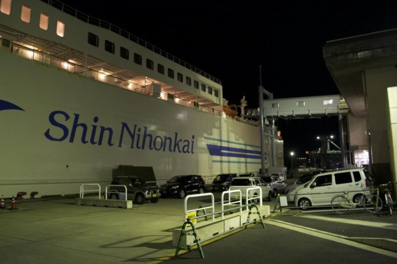
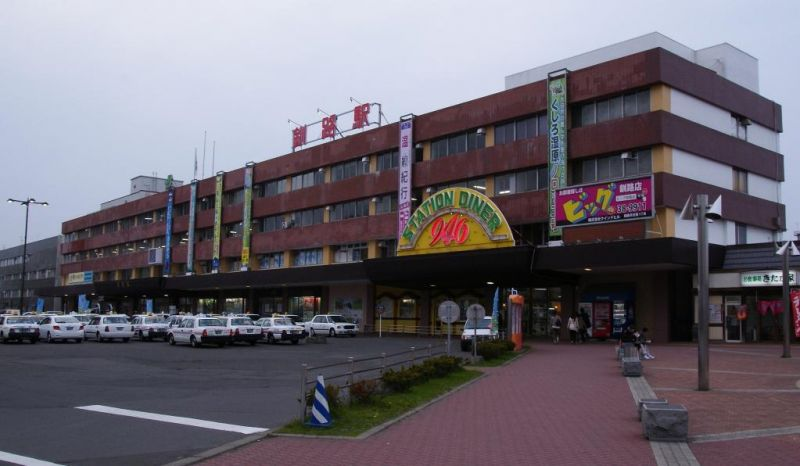
Selama musim panas, suhu di Hokkaido bisa mencapai 17° C hingga 22° C, musim panas dan dingin yang tidak akan ditemukan di kota manapun di Jepang. Musim dingin yang dingin, dengan suhu rata-rata di bulan Januari mulai dari -12° C sampai -4° C. Badai salju juga dapat dilihat di musim dingin, dengan tumpukan-tumpukan salju yang bertahan untuk waktu yang lama. Hokkaido juga menawarkan beberapa kualitas tertinggi bubuk salju di dunia, juga dengan banyaknya pegunungan, Hokkaido adalah tujuan populer bagi wisatawan yang hobi dengan olahraga salju (Ski, snowboard, dll.).
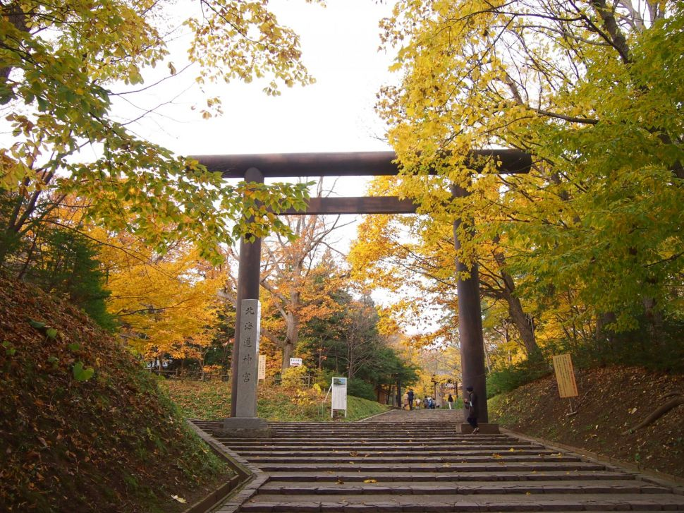
Biasanya di Hokkaido, masyarakatnya merayakan kedatangan musim dingin dengan mengadakan Festival Salju Sapporo, atau Yuki Matsuri. Festival ini juga dilihat sebagai kesempatan untuk mempromosikan hubungan internasional, termasuk International Snow Contest, yang diselenggarakan di Taman Odori sejak tahun 1974 dengan tim-tim dari berbagai negara di dunia yang berpartisipasi. Dalam berbagai situs, para pengunjung dapat menikmati seluncuran salju yang panjang, patung salju, seluncur es, patung-patung es dan labirin raksasa yang terbuat dari salju. Hokkaido populer di kunjungi oleh para wisatawan, pesona indah alam dan juga kulinernya membuat Hokkaido menjadi salah satu prefektur terpopuler untuk daerah wisata selain Tokyo, Kyoto serta Osaka. Karena posisinya paling atas area prefektur yang ibu kotanya Sapporo ini memang memiliki suhu yang lebih dingin, untuk kulinernya Hokkaido memiliki keunikan tersendiri dari daerah lain di Jepang. Berikut daftar menu makanan terfavorit di Hokkaido
NAMA MAKANAN |
Keterangan |
Gambar |
|
"Jingusukan", Daging Kambing Panggang "Genghis Khan" |
Faktanya meski Hokkaido secara keseluruhan dikelilingi oleh air, daging kambing panggang telah menjadi makanan laut yang diklaim sebagai hidangan juara #1 di Hokkaido. Dikenal di Jepang sebagai "Genghis Khan", (alasannya sedikit misterius dengan teori bermacam-macam) pelancong mengatakan porsi dan rasanya sangat berbeda dengan yang biasa ditemukan di bagian Jepang mana pun, malah Anda bisa dapat porsi lebih banyak dengan harga hemat! | 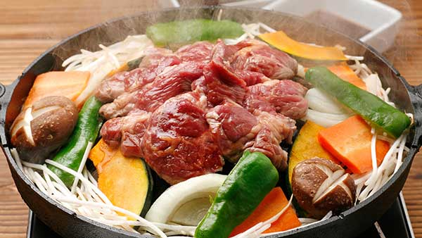 |
|
Sushi |
Terkenal dengan topping yang banyak sekali dengan keahlian chef kuliner yang membuatnya, posisi #2 di daftar kami adalah Sushi. Coba cicipi dan Anda bakal tahu mengapa orang lokal tidak mau makan sushi di luar Hokkaido. | 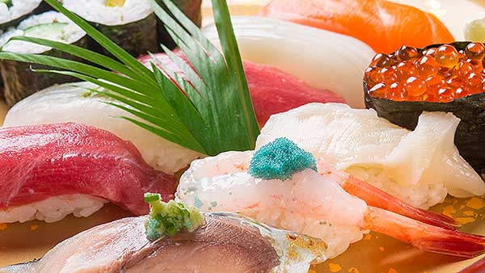 sushi |
|
"Kaisendon" Hidangan Laut Nasi Mangkuk |
Di peringkat #3 ada kaisendon, sebuah nasi mangkuk dengan topping yang berlimpah dengan kelezatan harta karun dari laut. Dinikmati karena kesegaran dan rasanya, termasuk kerang-kerangan—cenderung dijadikan sebagai alas untuk topping—yang bisa dibilang luar biasa. | 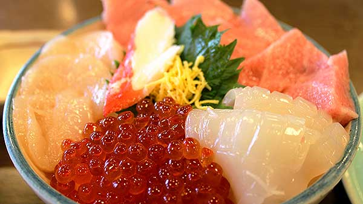 |
|
"Unidon" Nasi Mangkuk Telur Ikan Landak Laut |
Telur ikan landak laut dengan topping mewah berkualitas-tinggi yang disebut "uni", hidangan nasi ini menempati posisi #4. Banyak orang yang mengatakan tidak mau makan uni mereka mereka mencoba unidon ala Hokkaido! | 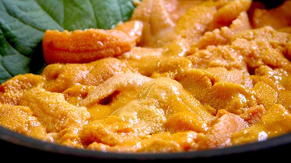 |
|
Sup Kari |
Berada di posisi #5 ada makanan khas Hokkaido yang baru-baru ini terkenal yaitu sup kari. Banyak penyantap makanan ini mengatakan bahwa supnya saja sudah lezat, berisi kentang, bawang, dan rempah-rempah lokal terkenal lainnya yang hanya disajikan untuk melezatkan rasa. | 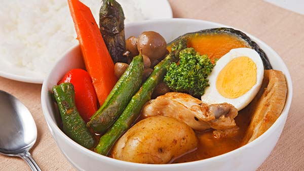 |
|
Kepiting Rebus |
Posisi #6 di daftar kami adalah makanan utama Hokkaido--kepiting rebus. Sebagai tambahan untuk menjaga kesegarannya, berbagai macam kepiting banyak tersedia (termasuk kepiting raja merah, kepiting salju, dan kepiting rambut kuda) semuanya dalam porsi ukuran yang besar dan kuat (Anda sebenarnya dapat memesan kepiting secara utuh) itu merupakan ciri khas yang menggiurkan hanya dapat ditemukan di menu Hokkaido. | 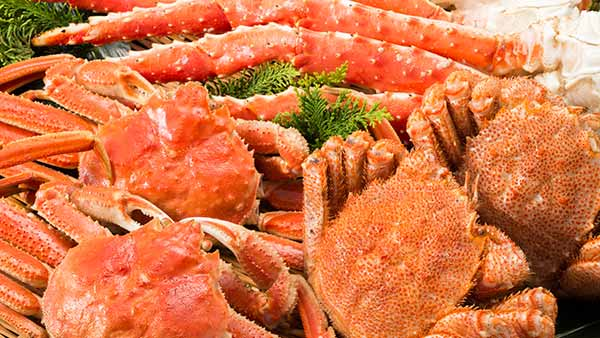 |
|
"Butadon" Nasi Mangkuk Babi |
Berasal dari daerah Tokachi di Hokkaido, butadon menempati posisi #7 dalam peringkat kami. Irisan daging babi yang disajikan pada hidangan ini berbeda-beda pada setiap restauran, begitu pula cara menyantapnya. Para penyantap sepakat, sausnya bermutu tinggi di mana pun tempatnya! | 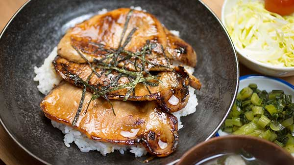 |
|
Cumi-Cumi Sashimi |
Terkenal dengan kesegarannya yang istimewa, cumi-cumi sashimi menempati posisi #8 dari daftar. Pengunjung mengklaim Anda tidak akan menyesal untuk mencicipi yang satu ini, meskipun dibeli di supermarket! Terkenal karena kesederhanaan dan kelezatannya, dapat dinikmati saat perjalanan, di rumah bersama segelas minuman sore…di mana pun dan kapan pun Anda mau. | 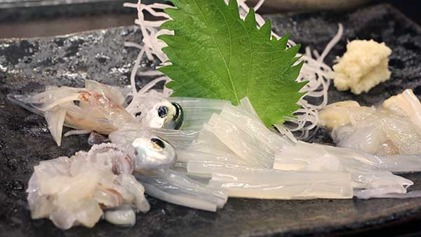 |
|
"Jagabata" Kentang dengan Mentega |
Kentang yang memiliki rasa luar biasa khas Hokkaido dengan mentega yang telah memikat hati para penyantapnya menempatkan hidangan ini di posisi #9. Hidangannya sendiri sudah lezat apalagi jika ditambahkan dengan topping lain khas Hokkaido, seperti keju atau "ika no shiokara" (fermentasi cumi-cumi dengan garam). | 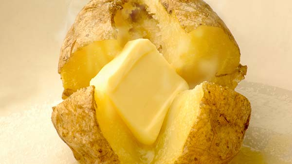 |
|
"Uniikuradon" Nasi Mangkuk Telur Ikan Landak Laut dan Ikan Salmon |
Yang terakhir namun tak berhenti di sini, posisi #10 diklaim oleh nasi mangkuk telur ikan landak laut dan ikan salmon. Berkaitan erat dengan telur ikan landak laut di posisi #4, hidangan ini membuat penyantap lapar ingin memakan hidangan laut lebih banyak lagi. Selain dikenal karena kesegaran yang luar biasa, juga menerima pujian karena harganya yang wajar tapi bisa mendapatkan porsi dengan bumbu berkualitas tinggi yang banyak sekali. | 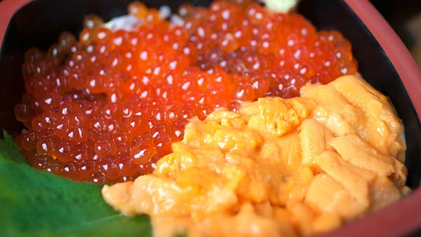 |